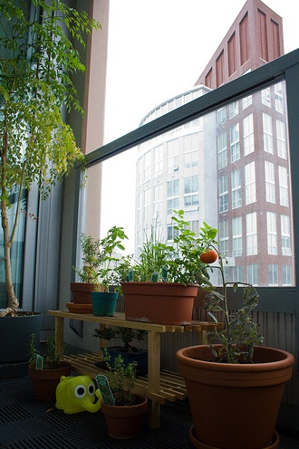
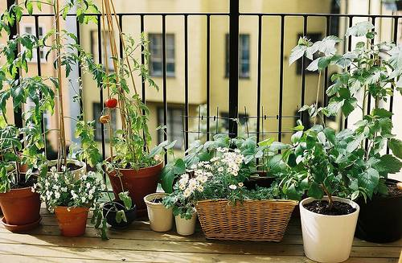
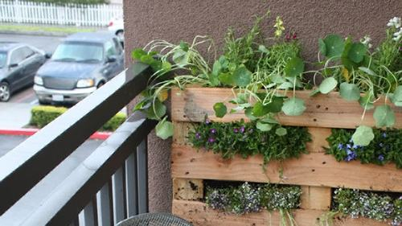

Welcome!
 This website is used to help New Zealanders who have or want to have a small space garden. From balconies to patios, we have you covered with advice and tips for plants and setting up your gardening space
Don't know where to start? Then head over to the "Getting Started" interactive questionnaire
The "Fruit/Veg Index" has all the plants info you need under one easy section. Each vegetable section has information on how to grow and maintain your plant, when to plant and easy to follow videos.
Check out the "Seasonal Guide" which gives you seasonal planting info based on your location.
Looking for something specific? Try our "Hints & Tips" or "FAQ" sections.
Or you could just search the whole site using the search bar!
